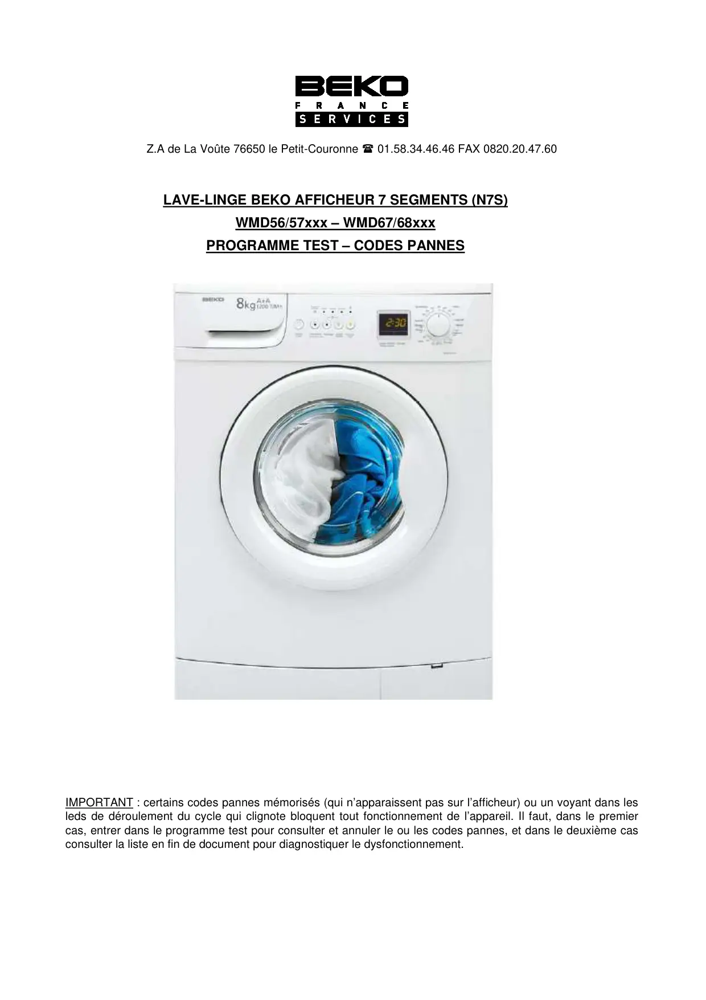
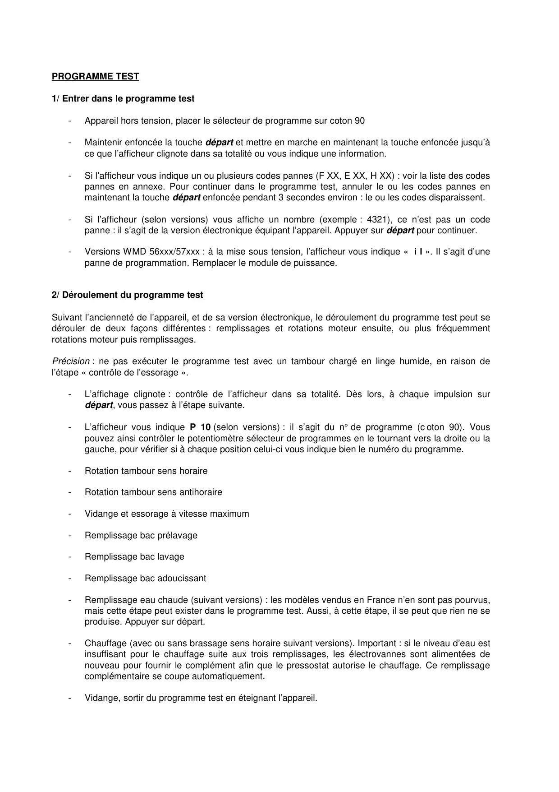
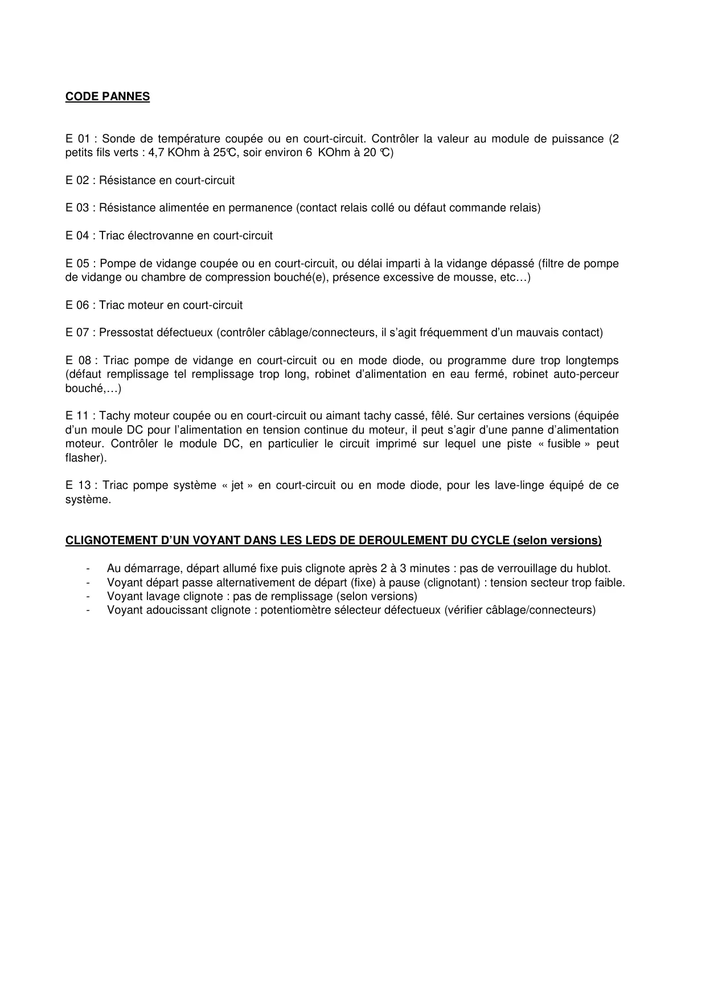

ProgrTest lave linge N7S WMD56.57.67.68xxx Fr

Z.A de La Voûte 76650 le Petit-Couronne 01.58.34.46.46 FAX 0820.20.47.60LAVE-LINGE BEKO AFFICHEUR 7 SEGMENTS (N7S)WMD56/57xxx – WMD67/68xxxPROGRAMME TEST – CODES PANNESIMPORTANT : certains codes pannes mémorisés (qui n’apparaissent pas sur l’afficheur) ou un voyant dans lesleds de déroulement du cycle qui clignote bloquent tout fonctionnement de l’appareil. Il faut, dans le premiercas, entrer dans le programme test pour consulter et annuler le ou les codes pannes, et dans le deuxième casconsulter la liste en fin de document pour diagnostiquer le dysfonctionnement.
1 / 3
PROGRAMME TEST1/ Entrer dans le programme test-Appareil hors tension, placer le sélecteur de programme sur coton 90-Maintenir enfoncée la touche départ et mettre en marche en maintenant la touche enfoncée jusqu’àce que l’afficheur clignote dans sa totalité ou vous indique une information.-Si l’afficheur vous indique un ou plusieurs codes pannes (F XX, E XX, H XX) : voir la liste des codespannes en annexe. Pour continuer dans le programme test, annuler le ou les codes pannes enmaintenant la touche départ enfoncée pendant 3 secondes environ : le ou les codes disparaissent.-Si l’afficheur (selon versions) vous affiche un nombre (exemple : 4321), ce n’est pas un codepanne : il s’agit de la version électronique équipant l’appareil. Appuyer sur départ pour continuer.-Versions WMD 56xxx/57xxx : à la mise sous tension, l’afficheur vous indique « i l ». Il s’agit d’unepanne de programmation. Remplacer le module de puissance.2/ Déroulement du programme testSuivant l’ancienneté de l’appareil, et de sa version électronique, le déroulement du programme test peut sedérouler de deux façons différentes : remplissages et rotations moteur ensuite, ou plus fréquemmentrotations moteur puis remplissages.Précision : ne pas exécuter le programme test avec un tambour chargé en linge humide, en raison del’étape « contrôle de l’essorage ».-L’affichage clignote : contrôle de l’afficheur dans sa totalité. Dès lors, à chaque impulsion surdépart, vous passez à l’étape suivante.-L’afficheur vous indique P 10 (selon versions) : il s’agit du n° de programme (c oton 90). Vouspouvez ainsi contrôler le potentiomètre sélecteur de programmes en le tournant vers la droite ou lagauche, pour vérifier si à chaque position celui-ci vous indique bien le numéro du programme.-Rotation tambour sens horaire-Rotation tambour sens antihoraire-Vidange et essorage à vitesse maximum-Remplissage bac prélavage-Remplissage bac lavage-Remplissage bac adoucissant-Remplissage eau chaude (suivant versions) : les modèles vendus en France n’en sont pas pourvus,mais cette étape peut exister dans le programme test. Aussi, à cette étape, il se peut que rien ne seproduise. Appuyer sur départ.-Chauffage (avec ou sans brassage sens horaire suivant versions). Important : si le niveau d’eau estinsuffisant pour le chauffage suite aux trois remplissages, les électrovannes sont alimentées denouveau pour fournir le complément afin que le pressostat autorise le chauffage. Ce remplissagecomplémentaire se coupe automatiquement.-Vidange, sortir du programme test en éteignant l’appareil.
2 / 3
CODE PANNESE 01 : Sonde de température coupée ou en court-circuit. Contrôler la valeur au module de puissance (2petits fils verts : 4,7 KOhm à 25°C, soir environ 6 KOhm à 20 °C)E 02 : Résistance en court-circuitE 03 : Résistance alimentée en permanence (contact relais collé ou défaut commande relais)E 04 : Triac électrovanne en court-circuitE 05 : Pompe de vidange coupée ou en court-circuit, ou délai imparti à la vidange dépassé (filtre de pompede vidange ou chambre de compression bouché(e), présence excessive de mousse, etc…)E 06 : Triac moteur en court-circuitE 07 : Pressostat défectueux (contrôler câblage/connecteurs, il s’agit fréquemment d’un mauvais contact)E 08 : Triac pompe de vidange en court-circuit ou en mode diode, ou programme dure trop longtemps(défaut remplissage tel remplissage trop long, robinet d’alimentation en eau fermé, robinet auto-perceurbouché,…)E 11 : Tachy moteur coupée ou en court-circuit ou aimant tachy cassé, fêlé. Sur certaines versions (équipéed’un moule DC pour l’alimentation en tension continue du moteur, il peut s’agir d’une panne d’alimentationmoteur. Contrôler le module DC, en particulier le circuit imprimé sur lequel une piste « fusible » peutflasher).E 13 : Triac pompe système « jet » en court-circuit ou en mode diode, pour les lave-linge équipé de cesystème.CLIGNOTEMENT D’UN VOYANT DANS LES LEDS DE DEROULEMENT DU CYCLE (selon versions)-Au démarrage, départ allumé fixe puis clignote après 2 à 3 minutes : pas de verrouillage du hublot.-Voyant départ passe alternativement de départ (fixe) à pause (clignotant) : tension secteur trop faible.-Voyant lavage clignote : pas de remplissage (selon versions)-Voyant adoucissant clignote : potentiomètre sélecteur défectueux (vérifier câblage/connecteurs)
3 / 3